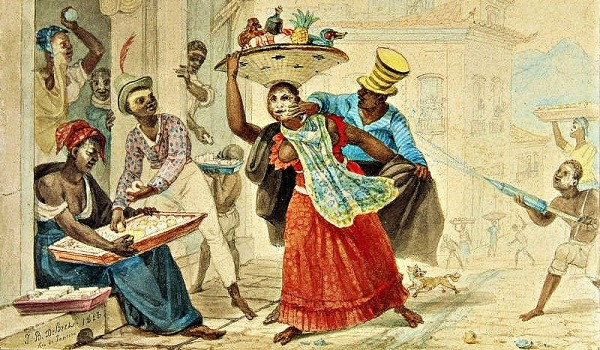
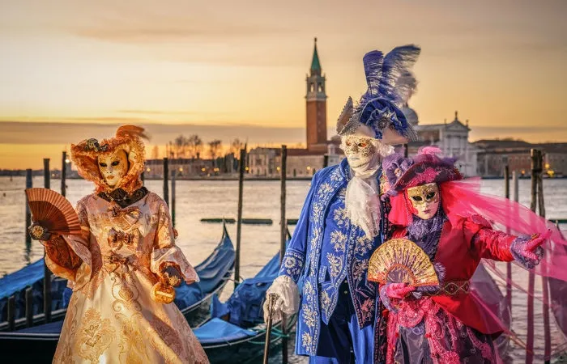

O carnaval é uma das festividades mais famosas do Brasil e ocorre anualmente, geralmente no mês de fevereiro. É conhecido por ser uma celebração animada, colorida e cheia de energia. Sua origem vem para o brasil no período colonial, caracterizado por diversas brincadeiras, como o entrudo. Ao longo do século XX, uma série de ritmos e danças passaram fazer parte do Carnaval brasileiro. Atualmente, ritmos como o samba, o maracatu e o frevo são seus símbolos. O Carnaval transformou-se no principal festa popular brasileira a partir da década de 1930 e, atualmente, conta com os blocos de rua que acontecem nos grandes centros do país, assim como desfiles das escolas de samba.
O Carnaval é uma festa que surgiu durante a Idade Média, relacionada ao cristianismo, mas com elementos herdados de celebrações antigas. Esses elementos antigos vêm de povos como os mesopotâmicos, gregos e romanos. A festa medieval do Carnaval era caracterizada pelo conceito de "mundo de cabeça para baixo", onde a ordem das coisas era temporariamente invertida, influenciada por festas mesopotâmicas. Os gregos e romanos realizavam festas em honra a Dionísio (Baco), que envolviam bebedeiras e prazeres carnais.
Com a consolidação da Igreja Católica na Idade Média, houve uma tentativa de controlar as festividades populares, consideradas excessivas e propensas a práticas pecaminosas. Foi estabelecida a Quaresma, um período de 40 dias que antecede a Semana Santa e é marcado por contrição e jejum. Para canalizar o ímpeto festivo da população, o período anterior à Quaresma, conhecido como carnis levale ou carne vale, surgiu como uma oportunidade para as pessoas desfrutarem seus desejos antes da abstinência da Quaresma. A expressão significa "retirar a carne" e representa o Carnaval como um momento de preparação para abster-se dos prazeres carnais.
Durante a Idade Média, o Carnaval podia durar meses, após o Natal e antes da Quaresma, ou apenas algumas semanas antes da Quaresma. Era comum a realização de brincadeiras, zombarias públicas e peças teatrais, tudo regado a muita comida e bebida, incluindo carne, que era um alimento inacessível para a maioria das pessoas durante o resto do ano.
As festividades do Carnaval incluem desfiles de escolas de samba, blocos de rua, bailes e festas por todo o país. As cidades mais conhecidas por seus carnavais grandiosos são Rio de Janeiro, Salvador e Recife/Olinda. Os desfiles de escolas de samba no Rio de Janeiro são um dos destaques, com escolas competindo em diferentes categorias com fantasias elaboradas, carros alegóricos e samba. O Carnaval é uma festa que celebra a diversidade cultural, a música, a dança e a alegria.
• NORDESTE
O Carnaval brasileiro é marcado pelos blocos de rua nas quatro principais capitais mencionadas. Em Salvador, esses blocos são acompanhados pelos trios elétricos, que percorrem diferentes pontos da cidade. O ritmo predominante no Carnaval baiano é o axé, um estilo musical tradicional da Bahia. Em 2019, o Carnaval de Salvador atraiu 1,7 milhão de pessoas para as ruas.

Em Recife, ocorre o maior bloco de Carnaval do mundo, chamado Galo da Madrugada. Estima-se que, em 2019, o Galo da Madrugada reuniu cerca de 2 milhões de pessoas que celebraram por várias horas na capital pernambucana. Além disso, o Carnaval de Pernambuco é conhecido por seus ritmos, como o frevo, as danças e o tradicional desfile dos bonecos de Olinda, que acontece na cidade vizinha de Olinda.
• SUDESTE
Na região Sudeste, os blocos de rua nas capitais São Paulo e Rio de Janeiro são os principais destaques do Carnaval. No Rio de Janeiro, o Carnaval atrai cerca de 7 milhões de pessoas para as ruas, enquanto em São Paulo o número chega a 5 milhões.
Nas duas cidades também ocorrem os tradicionais desfiles das escolas de samba. Em São Paulo, esses desfiles existem desde 1950, mas foram oficializados em 1968 com o apoio do poder público. No Rio de Janeiro, o desfile acontece desde 1932 e foi oficializado em 1935. O desfile do Rio de Janeiro é amplamente reconhecido como o maior símbolo do Carnaval brasileiro no exterior.